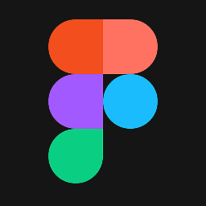
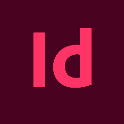
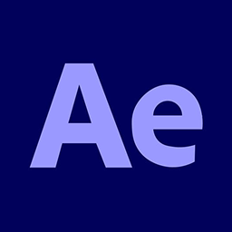
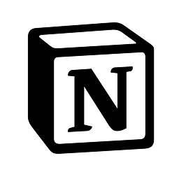
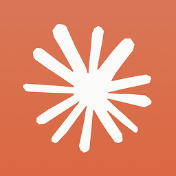

Intent · Design · Content
I turn research and reasoning into clear interactions, where every layout, transition, and decision has a purpose.
Open for new roles
Projects
Stride
Koher
Jeeva
Pankh aur Goonj
Stride
I spent four months trying to understand why people quit learning music. Not which app they used or how often they practiced, but what the moment of stopping actually felt like. 21 semi-structured interviews later, it was clear this was not a motivation problem. It was a design problem.
View Figma PrototypeThe Process
Finding the Question
I started by asking why people quit learning music. Not which app they used or how often they practiced, but what the moment of stopping actually felt like. 21 semi-structured interviews later, a pattern emerged that had nothing to do with motivation.
Listening Carefully
Each conversation followed the participant's own story. Some had stopped for days, some for years. Seven instruments, very different lives. But the same structural failure kept appearing: the tools had no answer for what happens after a break.
Making Sense of It
147 observation notes. Four rounds of affinity mapping over two weeks. Three gaps organised themselves from the data. The Visibility Gap, where learners could not tell if they were improving. The Validation Gap, where no one confirmed that struggle was normal. The Continuity Gap, where returning felt like starting over.
First Attempt
Lo-fi wireframes into a full hi-fi build. Clean hierarchy, correct spacing. Faculty review named the problem: it could be re-skinned as a fitness app and nobody would notice. That was the right diagnosis. Back to the drawing board.
Finding the Right Visual Language
The question shifted from what do music apps look like to what has music looked like, historically. Mehfil concert programmes. Blue Note album covers. Folk record sleeves. V2 was built from that grammar, not copying any one reference but carrying what they share.
Building the System
Six flows across two paths, with a guide and without. Every screen decision traces back to a specific finding from the interviews. The spacing grid, the colour system, the cultural copy at three specific moments. Nothing arbitrary.
The Guide Layer
The most unexpected outcome. A real human in the system, distinguished from AI outputs by colour and by the specificity of their language. Not a feature added at the end. The thesis argument in product form.
Challenges
The hardest part was not the design. It was the interviews. Getting people to articulate why they stopped, not just that they stopped, required patience and careful questioning. Most people had never been asked to think about it that way.
The first visual direction looked right on paper and said nothing in practice. Recognising that and starting over mid-process was uncomfortable but necessary.
Designing the guide layer without it feeling like surveillance or pressure was a constant tension. The line between supportive and guilt-inducing is thin, and every screen had to be evaluated against it.
Outcome
A Figma prototype covering six complete user flows across two paths. A companion layer that sits on top of existing music learning apps without replacing them, addressing exactly the layer where they fail.
More than the prototype, Stride produced a clear design position: that the break is not a failure to be punished, it is a structural feature of how most people learn, and tools should be built around that reality.
Koher
Koher is a long-term open-source project building AI diagnostic tools that separate language from judgement. The principle is that AI should read and surface, while deterministic logic makes the call. I joined as a design intern and worked across the interface, the shared design system, and a transparency pattern that became central to how Koher communicates with users.
View DetailsWhere I Came In
Understanding the Project
Koher was already in motion when I joined. Three tools in development, a clear architectural principle, and a visual system that needed someone to own it. My first few weeks were spent reading, asking questions, and understanding what the project was actually trying to do before touching anything.
Designing the Revision Delta panel
Designed the split-viewport input with a VS marker so V1 and V2 read as one thing changing. Replaced percentage deltas with direction arrows and a deterministic state label, since DeBERTa scores are confidence estimates, not exact measurements. Gave each row a one-line reason grounded in the actual score, and kept Behind the Curtain off by default for students who want the full breakdown.
Building the Design System
Built and maintained the shared CSS system across all three tools. As new tools were added, inconsistencies appeared. Keeping the visual language coherent across the Coherence Diagnostic, the Play Shape Diagnostic, and the Fragment Mapper became an ongoing responsibility, not a one-time task.
The Transparency Pattern
Established a pattern that shows users how a diagnostic decision was reached. Not what the AI thinks, but which rules were applied and why. This became a recurring element across the product suite and connected directly to Koher's core principle of making the system's reasoning visible.
Supporting a Junior Researcher
Midway through the internship I started managing onboarding and running weekly reviews with a junior researcher joining the team. The work shifted from contributing to the project to also being responsible for someone else's understanding of it.
Challenges
Koher is built on a principle that goes against how most AI tools present themselves. The temptation is always to make the output feel confident and complete. The design challenge was the opposite: making the tool's limitations visible without undermining trust in what it actually does well.
Working across three tools with a shared system meant every component decision had downstream consequences. Nothing could be designed in isolation, and changes had to be coordinated carefully.
Outcome
Three deployed tools with a coherent visual system. A transparency pattern now embedded in how Koher communicates across all its products.
The internship also clarified something about how I work. I am most useful when I understand the reasoning behind a project, not just the brief. Koher required that from the start, and the work was better for it.
Jeeva
Jeeva started with a question: what does "smart" mean for someone with no internet access? We were five students designing for rural health awareness, and the brief pushed us to question who technology actually serves. The result was an offline-first PWA that helps parents assess malnutrition risk in their children, without connectivity, without a personal phone, and without needing to read fluently.
My role was Technical Developer. I built the PWA, structured the offline-first architecture, and worked with the team on the questionnaire logic and multilingual implementation.
The Work
Finding the Real Problem
Research brought us to a specific gap: rural parents struggle to detect early signs of malnutrition not because they don't care, but because reliable, accessible health guidance simply doesn't reach them. We spoke with on-field doctors, read existing research, and mapped what was missing.
Deciding What to Build
We chose to focus on a questionnaire-based tool over a content platform. Information alone doesn't help someone who doesn't know what questions to ask. A guided assessment does.
Designing for Low Literacy
Every question had to work as text, audio, and icon simultaneously. We couldn't assume the user could read. Language selection across Gujarati, Hindi, and English was the first screen, not an afterthought.
Building Offline-First
I structured the app so everything runs locally. Questions, audio files, icons, and recommendation logic all live in a single JSON file cached on load. No data is transmitted. No account is required. It works precisely when connectivity doesn't.
The Kiosk Model
Rather than assuming personal phone access, we designed Jeeva for shared devices in clinics, anganwadis, and community centres. A parent walks in, answers ten questions, and walks out with a risk assessment in their language.
Testing What We Built
We hadn't done field testing at the time of submission. That honesty is part of the project. We documented what we expected to learn, what we weren't sure about, and what would need to change after real users interact with it.
Challenges
Designing for someone who may not be able to read, may be using a shared device in a noisy clinic, and may be anxious about the result required stripping away every assumption we had about how people use digital tools.
The anonymity of the tool was intentional but created its own tension. Without any data storage, we couldn't offer follow-up or track outcomes. That is a real limitation, not a design choice we're fully comfortable with.
Outcome
A working PWA that runs entirely offline, supports three languages, and gives a personalised malnutrition risk assessment without requiring internet, identity, or literacy. Built and designed by a team of five, with research informing every decision.
Pankh aur Goonj
Pankh Aur Goonj is a funded VR birdwatching experience, currently in research and development. You enter a 3D forest, hear a bird call, and locate it using binoculars. The premise is simple: most ornithology education teaches identification but nobody teaches you how to actually find a bird. This project is building that skill without needing to be in a forest.
Grant received. Still being built.
I am Dhyeya Pandya.
I'm an interaction designer who thinks carefully. I work across research, interaction design, and visual craft, and vibe code when it helps me get closer to the idea faster.
Music, rain, and slow mornings tend to inform how I notice things. That attention usually ends up in the work.
Tech Stack & Tools




